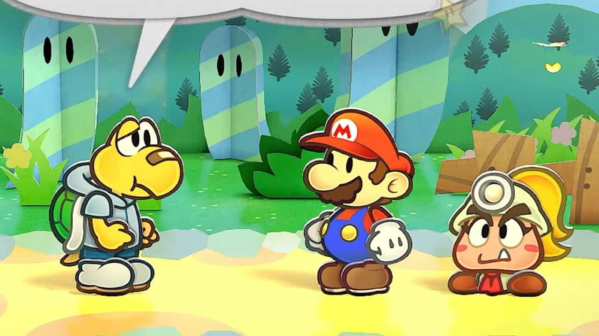

Upcoming Games
Here's a few upcoming games that I'm personally excited for.
Paper Mario: The Thousand Year Door Remake
A game that Nintendo fans have been begging for since the original came out... A remake of Paper Mario: The Thousand Year Door! I am super excited for this, as it might cause Nintendo to go back to the old style of Mario RPG, which I really hope happens. If you want to know why I love this game so much, check out my article about it in the favorites section!
Brickadia

This is a game I just recently heard about. It's an open world, multiplayer sandbox game coming out in 2024. I've always been a fan of games like this, so a new one sounds like a lot of fun! It seems to be a lot like Roblox, with different servers and worlds, so the community will be the main source of content. I'll definitely be picking this game up when it comes out.
The Elder Scrolls VI

Bethesda is a bit of a controversial developer, but I can't help but love the classic open world RPG format. For some reason, they announced this game in like 2016 and it's not coming out until probably 2028. That is a little bit frustrating, but I am endlessly excited for the next gradiose adventure in the land of Tamriel.